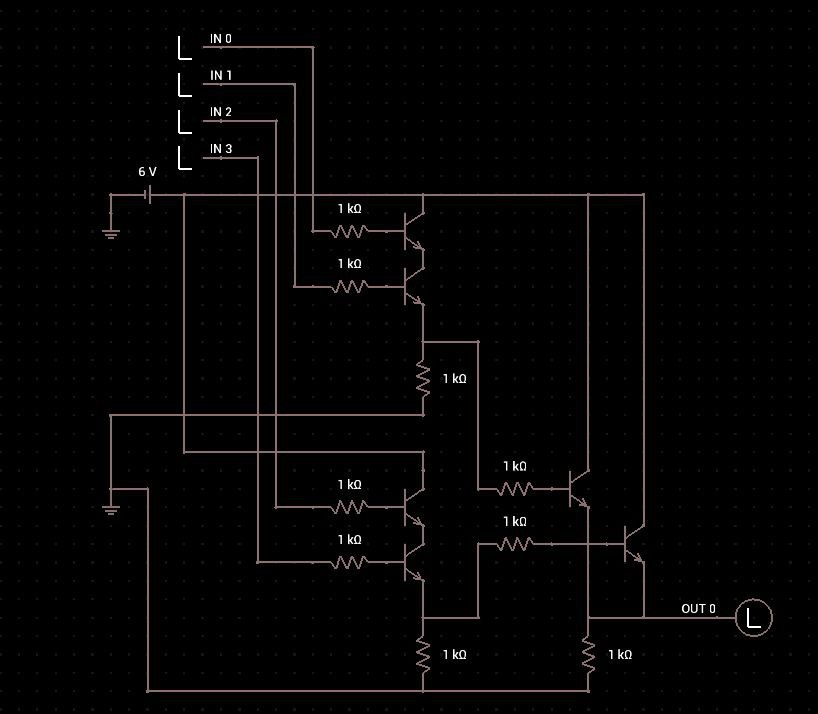
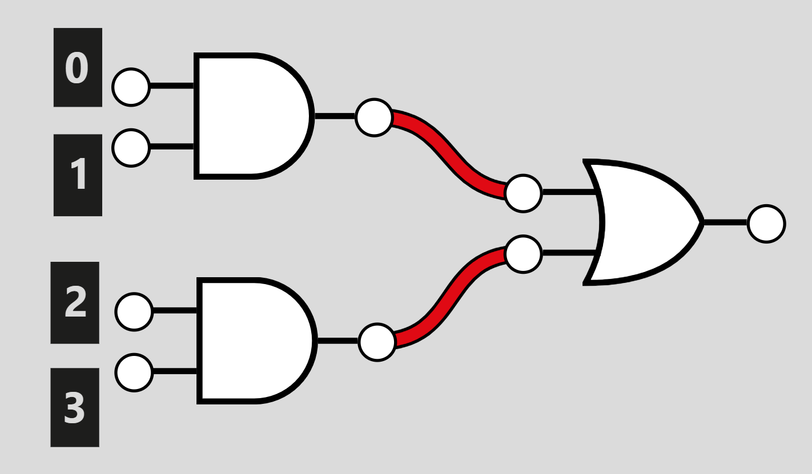

Low Logic
Created: July 31, 2025 9:42 AM Difficulty: Very Easy Category:
hardware
Analyzing the challenge docs, we get a circuit diagram and a CSV file with what appears to be the circuit input.

Here we have transistors and resistors. If we look closely, we can discover that this exact assembly of resistors and transistors allows us to create logic gates. In this case, we get one or gate and two and gates, which creates the following logic diagram:

To solve this challenge, we need to write a script (in this case, in Python) to model the gate flow by reading inputs from the CSV file. The script could look like this:
def open_file(url: str) -> list[str]:
with open(url) as f:
buffer = f.read()
return buffer.split('\n')[1:-1]
def operations(entry: str) -> None:
bits: int = [int(i) for i in entry.split(',')]
return (bits[0] and bits[1]) or (bits[2] and bits[3])
if __name__ == "__main__":
bits = [operations(i) for i in open_file('input.csv')]
bit_string = ''.join(str(b) for b in bits)
chars = ''.join([chr(int(bit_string[i:i+8], 2)) for i in range(0, len(bit_string), 8)])
print(chars)
This simple script has the open_file function opening the CSV file and saving the input into a list by splitting it by test cases (using the \n character) and removing the first and last items. On the other hand, operations gets each test case entry and performs bitwise operations. Lastly, the code converts from bytes to a string, revealing the flag.
Home